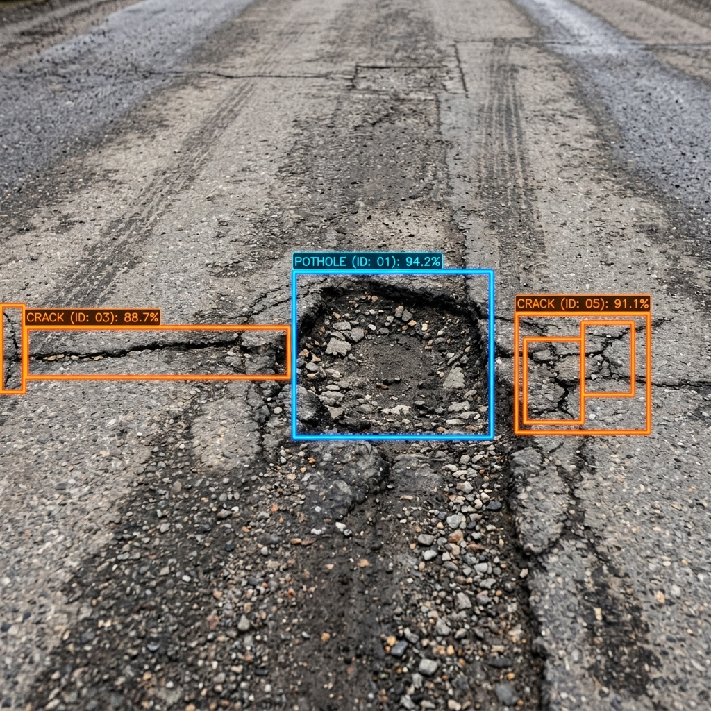
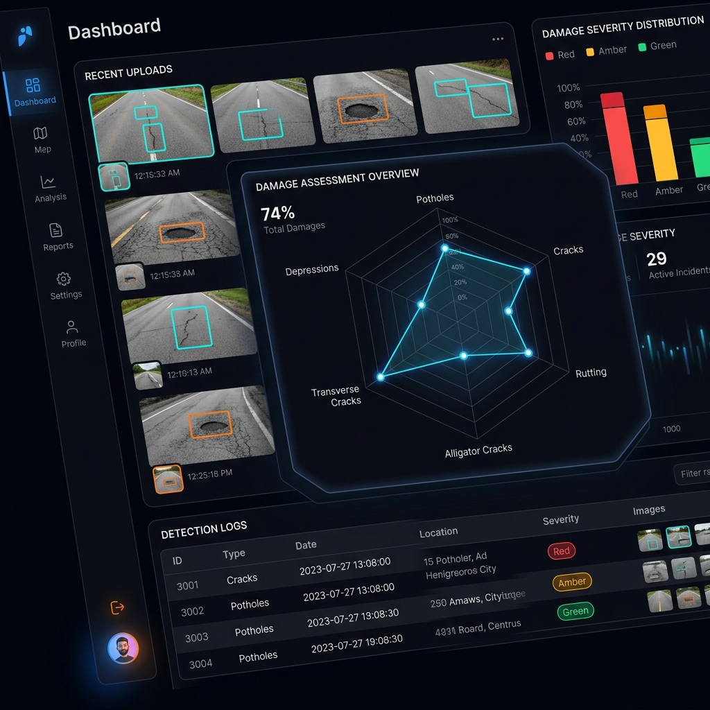

Upload driving footage or road images and receive instant AI analysis. StreetScan AI detects potholes, cracks, and structural defects with YOLOv8 — delivering professional reports and real-time analytics.
Four-stage automated pipeline — from media upload to actionable intelligence.
Upload road images (JPEG, PNG) or driving videos (MP4) through the drag-and-drop interface with GPS coordinates.
YOLOv8 model processes each frame detecting potholes, alligator cracks, transverse and longitudinal cracks with bounding boxes.
Results are graphed on dynamic radar charts, severity-ranked, and stored in the database with S3-backed image storage.
Download professional PDF reports with branded headers, severity gauges, side-by-side images, and recommended maintenance actions.
A full-stack AI platform engineered for road infrastructure analysis and maintenance planning.
Upload driving footage and receive a detailed breakdown of every detected damage instance per frame with timeline markers.
Pre-trained deep learning model detects potholes, alligator cracks, transverse and longitudinal cracks with high-confidence bounding boxes.
All original and YOLO-annotated images are stored securely in AWS S3 with signed URLs, or locally when S3 is not configured.
Download branded PDF reports with severity gauges, side-by-side images, detection breakdowns, and recommended repair actions.
Live-updating analytics that graph structural road integrity across damage categories with HSL-tailored radar charts.
Historical dashboard with severity filters, image previews, timestamp logs, and one-click downloads of past analysis records.
Four categories of road structural defects classified by the YOLOv8 model with confidence scoring and severity ranking.
Class D40
Deep surface depressions caused by wear, water infiltration, and sub-base failure.
High SeverityClass D20
Interconnected crack patterns resembling alligator skin — indicates structural fatigue.
High SeverityClass D10
Cracks running perpendicular to traffic flow, often caused by thermal contraction.
Medium SeverityClass D00
Cracks running parallel to traffic direction, typically from poor joint construction.
Low Severity

A full-featured command center for road infrastructure health monitoring. Every scan, every detection, every report — at your fingertips.
Production-grade architecture with industry-standard frameworks for maximum reliability.
Modern SPA with hot-reload dev server
High-performance async REST API server
State-of-the-art object detection model
Contour fallback & image processing
Secure cloud object storage for media
PostgreSQL / SQLite ORM layer
Well-documented RESTful endpoints for seamless integration and automation.
| Method | Endpoint | Description |
|---|---|---|
| GET | / | Server health check |
| POST | /api/reports/ | Upload image for AI analysis with GPS coordinates |
| GET | /api/reports/ | List all detection reports |
| GET | /api/reports/{id} | Get specific report by ID |
| GET | /api/reports/{id}/download-image | Download original uploaded image |
| GET | /api/reports/{id}/download-pdf | Download professional PDF report |
| POST | /api/reports/analyze-video | Analyze video frame-by-frame |
Get StreetScan AI running locally in under 5 minutes.
Download the source code from GitHub to your local machine.
Create a Python virtual environment, install dependencies, and launch the FastAPI server.
Install npm packages and launch the Vite development server.
Open localhost:5173, upload a road image or video, and see AI detections instantly.
# Clone the repository git clone https://github.com/SuilYun/updatedProject.git cd updatedProject # Start the Backend (FastAPI) cd backend/Backend/road_damage_aws python3 -m venv venv source venv/bin/activate pip install -r requirements.txt uvicorn main:app --reload # Start the Frontend (new terminal) cd frontend npm install npm run dev # Open http://localhost:5173
Deploy StreetScan AI today and start detecting road damage before it becomes a safety hazard.